INSTRUCTIONS
Material placed under the gatherer and stitched in the usual way will be slightly gathered. Any fabric that drapes well is especially suited for shirring with the gatherer, generally with a long stitch and tight tension.
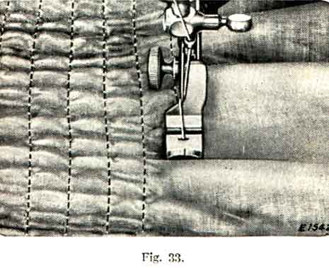
To increase the fullnes of the gathers, lengthen the stitch. To decrease the fullness, shorten the stitch.
With the gatherer, it is possible to shirr in narrow rows as shown in Fig. 33. The material may be guided as easily as when sewing with the presser foot.
Fine materials, such as batiste, silk or net, may be very attractivelt shirred. Where only a slight fullnes is required, as at the top of a sleeve or around the neck, the gatherer will be found very convenient.
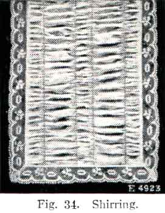
A very pleasing effect may be gained by using thread or embroidery silk of contrasting colour on the bobbin. Fig. 35 shows a white organdie collar and cuff set with red and green smocking made with the gatherer, using fine crochet cotton or tatting thread on top and white cotton on the bobbin.
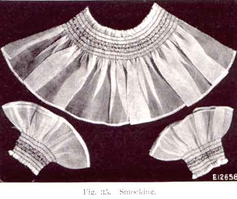
-
Clip off the right hand corner of the material for its edge to curl easily. Then, with the hemmer foot raised, place the material from left to right under the foot and, with its edge slightly raised, insert the corner into the mouth of the hemmer, easing it along until it fills the curl and reaches the needle.
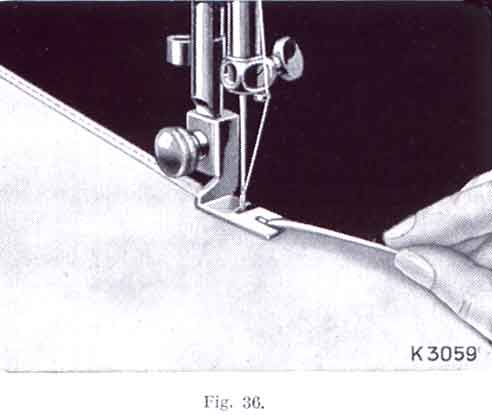
Lower the foot and make the first few stitches slowly. Guide the material with the thumb and forefinger of the right hand, so that the edge lies flat over the top of the hemmer, and proceed to sew, taking care to keep the hemmer curl just full. Should the dge begin to run out, move the hand to the left; should too much material run in, move to the right.
Start the hem, as explained on page 34, and, when it is well started, raise the needle to its highest point. Raise the hemmer to relieve the pressure on the hem, and pass the end of the lace through the slot in the side of the attachment and over the hem, as shown in Fig. 37.
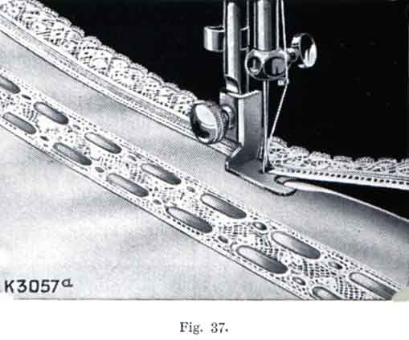
Take care that the hem is not displaced in the hemmer, and that the needle goes through both lace and hem. Then lower the presser bar, and guide the lace over the front of the hemmer, taking care to keep it well into the slot.
The two pieces of cloth should be laid, wrong side out, one over the other, with the edge of the under piece a little farther to the right than the upper piece, as shown in Fig. 38.
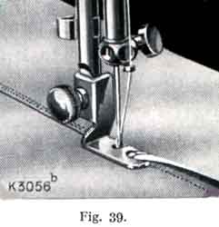Stitch the two pieces together, using the front projecting part of the hemmer as a guide for keeping the seam straight. This should be made close, but not too near to the edge of the upper piece, or the cloth will give way at the seam when a strain is put upon it.
Raise the hemmer foot and open the work out flat, wrong side up, so that the edges at the beginning of the seam into the mouth of the hemmer, as far as the needle, and lower the hemmer foot. While stitching, keep the material perfectly flat, using both hands, and see that the seam is in line with the mouth of the hemmer. For the second seam, the stitch should be lengthened slightly.
-
With its slide closed, see Fig. 40, the attachment will make hems up to one inch wide.
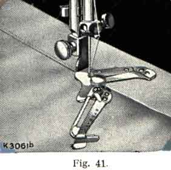Loosen the screw at the front and move the slide until the pointer is against the desired width, then tighten the screw. Insert the edge of the material between the slide and the number gauge, and draw it backward and forward until the hem is formed, stopping with its end under the needle. Lower the presser bar and sew, taking care in guiding the work to keep the hemmer full. Felling can also be done by following the instructions on page 36.
To make a hem more than one inch wide, loosen the screw, draw the slide to the right as far as it will go, and turn it towards you, as in Fig. 41. Fold and crease down a hem of the desired width, pass the fold under the extension at the right of the hemmer, then insert the edge of the material into the folder, and proceed to sew.
-
Lines 1, 2, 3, 4, and 5 in Fig. 42 indicate where the material is to be placed for various operations, as follows:
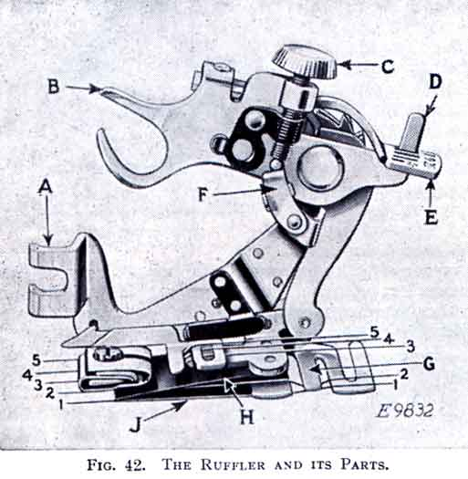
Line 1 -- the correct position for the material to which the ruffled material is applied.
Line 2 -- material to be ruffled.
Line 3 -- the facing for the ruffle.
Line 4 -- thestrip of piping material.
Line 5 -- the edge to be piped.
Refer to Fig. 42 when inserting the material in the ruffler.
The names and uses of the principal parts of the ruffler are as follows, see Fig. 42:
A -- FOOT -- the part by which the ruffler is attached to the presser bar.
B -- FORK ARM -- the section that must be placed astride the needle clamp.
C -- ADJUSTING SCREW -- the screw that regulates the fullness of the gather.
D -- PROJECTION -- the part that projects through the slots in the adjusting lever.
E -- ADJUSTING LEVER -- the lever that sets the ruffler for gathering or for making a plait once at every six inches or once at evry twelve inches, as desired; also for disengaging the ruffler, when either plaiting or gathering is not desired.
F -- ADJUSTING FINGER -- the part which regulates the width or size of the plaits.
G -- SEPARATOR GUIDE -- the guide on the underside of the ruffler, containing slots into which the edge of the material is placed to keep the heading of the ruffle even; also for separating the material to be ruffled from the material to which the ruffle is to be attached.
H -- RUFFLING BLADE -- the upper blue steel blade with the teeth at the end to push the material in plaits up to the needle.
J -- SEPARATOR BLADE -- the lower blue steel blade without teeth, which prevents the teeth of the ruffling blade coming into contact with the feed of the machine or the material to which ruffle or plaiting is to be applied.
To Attach the Ruffler to the Machine
Raise the needle bar to its highest position and remove the presser foot. Attach the ruffler foot (A) to the presser bar from the right and fasten by means of the thumb screw, at the same time placing the fork arm (B) astride the needle clamp as shown in Fig. 43.
To Adjust the Ruffler for Gathering
The adjusting finger (F) is not intended for gathering and should be moved forward and away from the needle, as shown in Fig. 43.
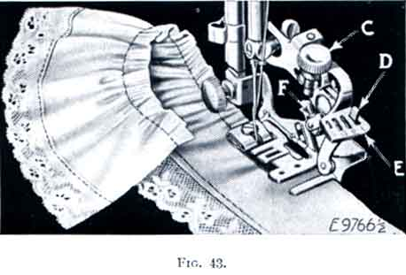
Raise the adjusting lever (E) and move it to the left so that the projection (D) will enter the slot marked "1" in the adjusting lever (E) when the lever is released. The ruffling blade will then move forward and back once at every stitch. Insert the material to be ruffled between the two blue blades, following the line 2 in Fig. 42. Draw the material slightly back of the needle, lower the presser bar and commence to sew.
To make fine gathering, shorten the stroke of the ruffling blade by turning the adjusting screw (C) upward; also shorten the stitch. To make full gathering, lengthen the stroke of the ruffling blade by turning the adjusting screw (C) downward; also lengthen the stitch. By varying these adjustments, many pleasing varieties of work can be accomplished.
To Make a Ruffle and Sew it to a Garment in One Operation
Insert the material to be ruffled between the two blue blades, following the line 2 (Fig. 42).
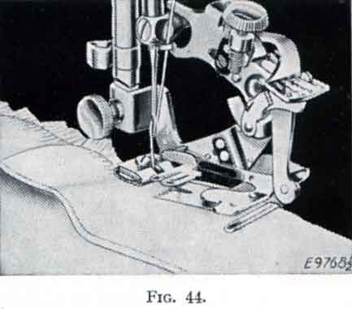
Place the garment to which the ruffle is to be attached under the separator balde, following the line 1 (Fig. 42). Place the material for the the facing over the upper blue blade, as shown in Fig. 45, following the line 3 (Fig. 42). The facing may be straight or bias material. If the facing is to be on the right side of the garment, place the garment and the ruffle so that the wrong sides are together. If the facing is to be on the wrong side, place the right sides of the garment and the ruffle together.
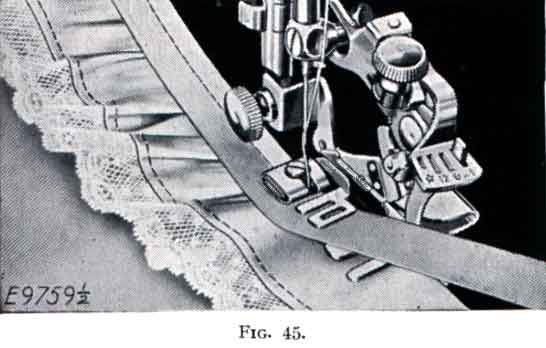
-
Piping a Ruffle
Insert the material to be ruffled between the two blue blades, following the line (Fig. 42). This material must not be over 1 1/4 inches wide, as it is carried through the ruffler with the finished edge of the ruffle to the right of the attachment as shown in Fig. 46.
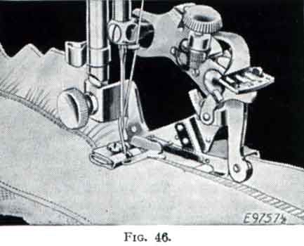
The material for piping must measure about 1/4 inch wide when folded in the centre and is usually cut on the bias. Place the piping material in the ruffler, following the line 4 (Fig. 42) with the folded edge of the piping to the right. The material to which the piping and ruffling are to be sewn should be folded on the edge and inserted in the ruffler, following the line 5 (Fig.42).
To Adjust the Ruffler for Plaiting
Raise the adjusting lever (E) and move it to the right so that the projection (D) will enter the slot marked "6" in the adjusting lever when the lever is released.
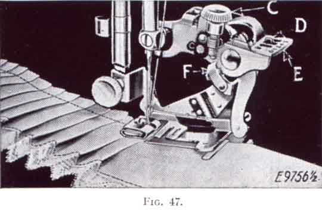
The ruffling blade will then move forward and back once at every six stitches. To adjust the ruffling blade to make a plait once at every twelve inches, place the adjusting lever (E) so that the projection (D) enters the slot marked "12" in the adjusting lever. Insert the material to be plaited between the two blue blades, following the line 2 (Fig. 42). The size or width of plaits is regulated by the adjusting screw (C) and the adjusting finger (F, Fig. 47). To make a wider plait, move the adjusting finger (F) back or toward the needle and turn the adjusting screw (C) downward. To make a smaller plait, turn the adjusting screw (C) upward. The distance between plaits is regulated by the length of stitch.
To Adjust the Ruffler for Group Plaiting and Gathering
The ruffler can be adjusted for group plaiting by lifting the adjusting lever (E) and moving it to the right so that the top of the projection (D) enters the small slot indictaed by the star on the adjusting lever.
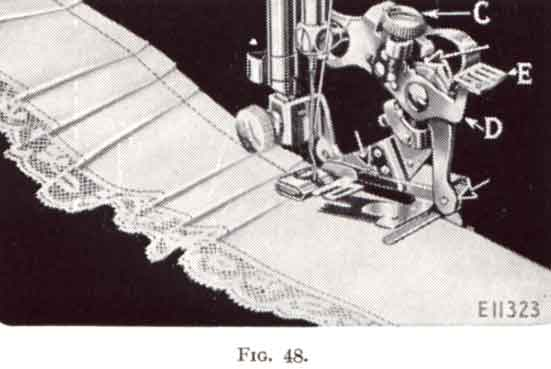
This should be done at the points where you wish to make the space between the plaits. The ruffler will then stop and plain stitching will be made. When the desired space has been made, adjust the lever (E) so that the projection (D) enters either the slot marked "6" or the slot marked "12". By alternately making groups of plaits and plain spaces, as shown in Fig. 48, very attractive work can be produced.
To Oil the Ruffler
Occasionally apply a drop of oil to the working parts of the ruffler at each of the places indicated by the unlettered arrows in Fig. 48. After oiling, operate the ruffler on a waste piece of material to prevent the oil soiling the work. If the ruffler does not plait evenly, a drop of oil may remedy the trouble.